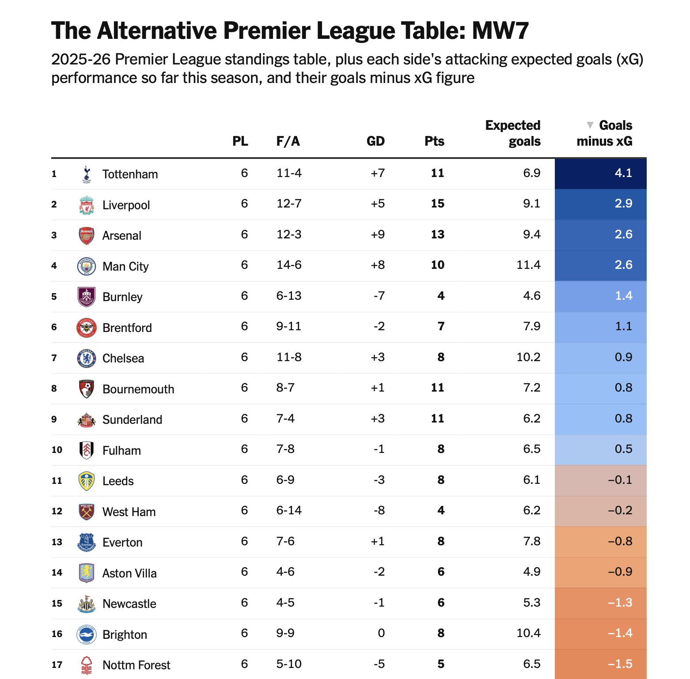
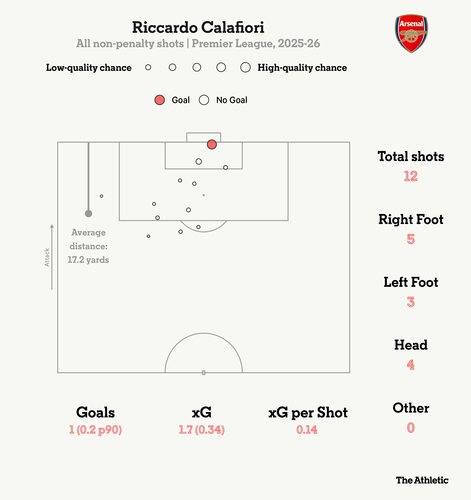
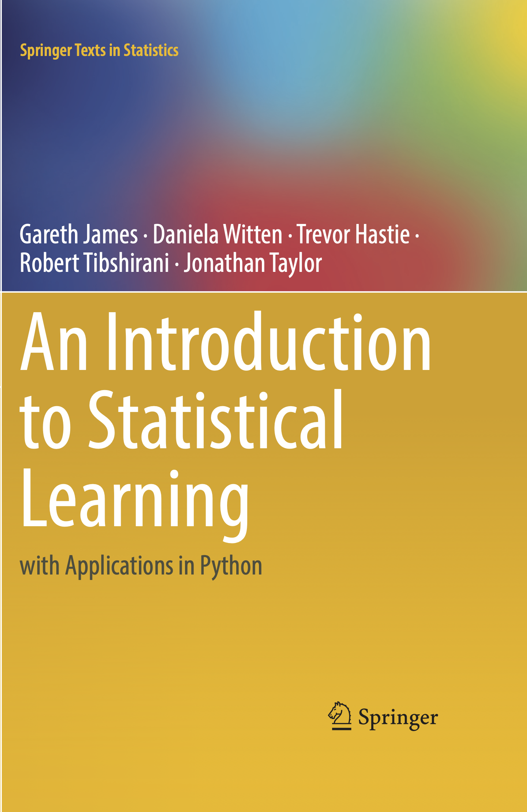

graph LR
%% Core Stages
A[Raw Data Sources] --> D[Data Preparation]
D --> E[Model Training]
E --> F[Model Evaluation]
F --> G[Finalized Model]
G --> H[Predictions]
%% Iteration Loops
F --> |"Refine"| D
F --> |"Retrain"| E
The Winning Formula
Or, Data Science for Security Engineers
Phil Henrickson, PhD
Senior Data Scientist, AE Business Solutions
October 16, 2025
So, You Want To Be a Data Scientist
“I don’t like math, statistics, or programming.
How do I be a data scientist?”
“I don’t like math, statistics, or programming.
How do I be a data scientist?”
When someone tells me, “I want to learn about data science”, I’ve come to realize that there are generally two different mentalities:
- I want to learn the one-cool-trick from an open source data science package that I can implement in my project with little to no effort that will look impressive to my higher ups who will have next to no idea what I’m talking about but will praise me for using something they can call AI.
When someone tells me, “I want to learn about data science”, I’ve come to realize that there are generally two different mentalities:
- I want to learn the one-cool-trick from an open source data science package that I can implement in my project with little to no effort that will look impressive to my higher ups who will have next to no idea what I’m talking about but will praise me for using something they can call AI.
- Tell me where to begin on the dark and unending path into statistics, mathematics, and programming for the purpose of learning from data in order to draw uncertain inferences about data-generating processes at work in the world so that I might better understand why things happen.
When someone tells me, “I want to learn about data science”, I’ve come to realize that there are generally two different mentalities:
- I want to learn the one-cool-trick from an open source data science package that I can implement in my project with little to no effort that will look impressive to my higher ups who will have next to no idea what I’m talking about but will praise me for using something they can call AI.
- Tell me where to begin on the dark and unending path into statistics, mathematics, and programming for the purpose of learning from data in order to draw uncertain inferences about data-generating processes at work in the world so that I might better understand why things happen.
This is what this talk is about.
To be clear, I don’t believe that I can pack semesters worth of info into twenty minutes.
But, there is enough going on in the world of AI/ML for cybersecurity that it’s probably worth getting a mental model for what is going on.
I think the best I can reasonably do is spark some level of interest in this area and point you to some places to go if you want to learn more.
The Plan
So, I will point you towards some resources I think are worth checking out.
I will give you my recommendations for a basic technology stack.
I will list a few books I think you should read (and yes, they are textbooks).
But, in the end, none of that is really important.
The most important thing about to understand about data science is a mentality
So first, I want to tell you a story.
1) Charles Reep and the
Desolation of English Football
Or, the importance of research design
I recently took a trip to the UK and attended a football (read: soccer) match.
To prepare for this, I did what anyone would do: I read a ~500 page book on the history of soccer tactics and formations.1
This book contained the story of the first ever data-driven insight into the sport of soccer by a man named Charles Reep.
In 1950, Charles Reep was an RAF officer stationed in Bushy Park, England.
A devoted football fan, he had been appointed director of football teams for the RAF and obsessively sought ways to improve his teams.
While attending a football match between Swindon and Bristol on March 18, 1950, he became fed up after watching attack after attack produce no goals.
At half time, he decided to do what anyone would do: record on a piece of paper every attacking move by Swindon in the second half to analyze their (lack of) offensive strategy.
Charles Reap recorded all 147 attacking sequences by Swindon in the second half, which eventually produced one goal in a 1-0 Swindon victory.
Despite the victory, as Charles Reep saw it, Swindon’s rate of failure in attacking was >99%.
Motivated by this, he developed increasingly elaborate (handwritten) methods for recording and analyzing the events within soccer games.
Reep wanted to know how to improve a team’s attacking strategy; he wanted to understand when goals are most likely to occur.
He hand-recorded data on sequences of passes from hundreds of games, eventually publishing his work and findings.
After recording hundreds of games, he felt the data confirmed an idea he had been circling for years.
He observed:
Only two goals out of nine came from [sequences] which included more than three received passes.’
Stated another way, ~80% of goals, the vast majority, came from passing sequences with three passes or less.
Reep produced what was arguably the first-ever data-driven insight into the sport of soccer: goals tended to occur on shorter sequences of passes.
If a team tries to play football and keeps it down to not more than three passes [per sequence], it will have a much higher chance of winning matches. Passing for the sake of passing can be disastrous.
The key to scoring goals and winning matches, therefore, was simple: reduce passes and possession time in favor of getting the ball downfield as quickly as possible.
The teams he oversaw at the RAF implemented his strategies and saw tremendous success.
Two smaller teams, Watford and Wimbledon, came to embrace his recommendations for “direct” football and managed to achieve a series of promotions.
Reep’s strategies eventually made its way to the head of the English Football Association, where it became the leading school of thought for football development in England.
So, why am I telling you about this?
Charles Reep followed the steps that we would expect of a data science project:
- He collected data.
- He learned something from the data.
- He used what he learned to recommend a strategy.
- That strategy led to success.
Until it didn’t. And it eventually turned into a disaster.
Because what Reep learned about soccer was fundamentally wrong.
Reep observed that ~80% of goals came from passing sequences with three passes or less.
But he also observed that ~90% of all passing sequences had three passes or less.
Reep observed that ~80% of goals came from passing sequences with three passes or less.
But he also observed that ~90% of all passing sequences had three passes or less.
Meaning, shorter passing sequences are actually slightly less likely to produce goals. Because there are a lot of short passing sequences in soccer that don’t lead to goals.
In other words, Reep solved for this:
\[ max_k \Pr(\text{Passes} = k \mid \text{Goal}) \text{ for all sequences of $k$ passes} \newline \textnormal{ie, what is the most common number of passes when a goal has been scored?} \]
instead of:
\[ \Pr(\text{Goal} \mid \text{Passes} = k) \newline \textnormal{ie, what is the probability of a goal among all sequences with $k$ passes?} \]
The difference between \(\Pr(\text{Goal} \mid \text{Passes} = k)\) and \(max_k \Pr(\text{Passes} = k \mid \text{Goal})\) is like, ridiculously important.
He should have been examining all passing sequences and asking, when do goals occur?
He would have noticed that goals are slightly more likely to come from longer sequences of passes.
Modern analyses of soccer data have come to emphasize the importance of passing and possession in the pursuit of Expected Goals (xGoals).


But this, unfortunately, was not understood in the 1980s.
Charles Hughes embraced Reap’s methods and ultimately became England’s director of football in 1983.
He wrote a book, The Winning Formula, which advocated against passing and possession in favor of long balls upfield and shooting when given the opportunity.
These policies become the orthodox of English football and set the direction of English football development for over a decade.
Hughes was removed from his job in 1994 when England failed to qualify for the World Cup.
England still has not won a major international tournament since 1966.
So, why am I telling you about this?
It is, frankly, horrifying that a philosophy founded on such basic misinterpretation of figures could have been allowed to become a cornerstone of English coaching. Anti-intellectualism is one thing, but faith in wrong-headed pseudo intellectualism is far worse.1
The most important thing about to understand about data science is a mentality
At this point, you might very reasonably be wondering:
How does any of this apply to to my job in Cybersecurity?
2) So How Does Any of This Apply to Your Job in Cybersecurity?
Data science is a means of learning patterns from data.
Our aim is to understand the processes that produce the data we observe.
- We collect data.
- We learn patterns from data.
- We try to understand what those patterns mean.
- We make recommendations given our understanding.
- We ask, what might we be getting wrong?
A mistake at any one of these steps can produce the wrong answer.
This process is as valuable for soccer as it is for cybersecurity.
You can throw a dart out the window and hit a vendor that is talking about their newfound capabilities with AI.
You can throw a dart out the window and hit a vendor that is talking about their newfound capabilities with AI.
What if I was to tell you that, under the hood, all they’re really doing is making use of the same techniques/models used to understand soccer (and everything else)?
I can make this claim, because I went and read a bunch of patents by cybersecurity vendors.
If you want to understand what vendors are doing when they talk about AI, all you really have to do is go to the source and learn a bit about statistics and predictive modeling.
Cybersecurity has some common problems, like how do you identify the presence of malware?.
How do you actually train a model for this?
You start where Charles Reep started.
You collect a bunch of data.
- We collect data.
- We learn patterns from data.
- We try to understand what those patterns mean.
- We make recommendations given our understanding.
- We ask, what might we be getting wrong?
You try to understand what that model learned.
You ask, what did this model get wrong? So that you can improve the next model.
SentinelOne basically came to the realization that malicious code was often injected in places that usually weren’t checked by malware models.
If you train a model to simply look for the presence of code in every file, you can improve your to detect malware.
Then Palo Alto Networks figured out that even this type of model can be easily fooled if you just inject a bunch of benign code into a file.
Then Palo Alto Networks figured out that even this type of model can be easily fooled if you just inject a bunch of benign code into a file.
So they came up with another model.
Then Palo Alto Networks figured out that even this type of model can be easily fooled if you just inject a bunch of benign code into a file.
So they came up with another model.
Which still isn’t perfect, because the path into data science is dark and unending.
3) Okay, So What Should I Do?
I promised that I was going to give you a list of resources to take on the dark and unending path into data science.
Phil’s 100% Guaranteed Winning Formula for Data Science
Phil’s 100% Guaranteed Winning Formula for Data Science
- Find a problem you intrinsically care about.
0.5) Find real data for that problem.
- Pick up a coding language that lets you get to know that data.
1.5) Find an IDE that you enjoy having open on your computer. - Read the introductions from a couple of these textbooks.
2.5) Then skip to sections that seem to match your problem.
- Become familiar with the data science workflow .
- Start your journey into learning Git/GitHub now, rather than later.
- Try the simplest possible method you can find for your problem.
- Have you figured out your problem? What do you have right/wrong? What could be better?
Find out for $14.99! You won’t believe how simple it is! Vendors hate him!
Phil’s 100% Guaranteed Winning Formula for Data Science
Phil’s 100% Guaranteed Winning Formula for Data Science
- Find a problem you intrinsically care about.
0) Find a problem you care about.
There’s are reason I’m constantly working on data science side projects related to board games and sports.
Phil’s 100% Guaranteed Winning Formula for Data Science
- Find a problem you intrinsically care about.
0.5) Find real data for that problem.
0.5 Find real data.
You will learn more from a day of working with real data for a topic you know something about than six weeks of working with canned/fake date.
Phil’s 100% Guaranteed Winning Formula for Data Science
- Find a problem you intrinsically care about.
0.5) Find real data for that problem.
- Pick up a coding language that lets you get to know that data.
0.5 Learn a coding language.
If you really want to be able to start learning from data, you should learn how to code.
Phil’s 100% Guaranteed Winning Formula for Data Science
- Find a problem you intrinsically care about.
0.5) Find real data for that problem.
- Pick up a coding language that lets you get to know that data.
1.5) Find an IDE that you enjoy having open on your computer.
1.5 Use an IDE
An IDE like VSCode will make your life easier when it comes to so many things, like working with databases and version control
To start, storing data in local files (.parquet, .csv) is fine, but you will eventually want to be adept at working with databases
Use DuckDB if you want to set up your own local database
Use BigQuery if you want a wildly cheap and performant cloud data warehouse
Phil’s 100% Guaranteed Winning Formula for Data Science
- Find a problem you intrinsically care about.
0.5) Find real data for that problem.
- Pick up a coding language that lets you get to know that data.
1.5) Find an IDE that you enjoy having open on your computer.
- Read the introductions from a couple of these textbooks.
2) Textbooks are your friend.
An Introduction to Statistical Learning aka the Bible
Computer Age Statistical Inference aka the Gospel of Efron and Hastie


Phil’s 100% Guaranteed Winning Formula for Data Science
- Find a problem you intrinsically care about.
0.5) Find real data for that problem.
- Pick up a coding language that lets you get to know that data.
1.5) Find an IDE that you enjoy having open on your computer.
- Read the introductions from a couple of these textbooks.
2.5) Then skip to sections that seem to match your problem.
Phil’s 100% Guaranteed Winning Formula for Data Science
- Find a problem you intrinsically care about.
0.5) Find real data for that problem.
- Pick up a coding language that lets you get to know that data.
1.5) Find an IDE that you enjoy having open on your computer.
- Read the introductions from a couple of these textbooks.
2.5) Then skip to sections that seem to match your problem.
- Become familiar with the data science workflow .
3) The Data Science Workflow
A guide to Data Science Workflows
Data Science is a Directed Ayclic Graph (DAG).
It is an iterative and ever changing process.
Bigger projects will result in a more complicated DAG, but it should still be a DAG.
flowchart LR
A[Raw BGG Data] --> B[Feature Engineering]
B --> C[Hurdle Model]
B --> D[Complexity Model]
D --> H[Predicted Complexity]
B --> F[Rating Model]
B --> G[Users Rated Model]
H --> F
H --> G
C --> E{Game Likely Rated?}
E -->|Yes| I[Apply Rating Predictions]
E -->|Yes| J[Apply Users Rated Predictions]
F --> I
G --> J
I --> K[Predicted Rating]
J --> L[Predicted Users Rated]
H --> M[Geek Rating Calculation]
K --> M
L --> M
M --> N[Final Predictions]
Phil’s 100% Guaranteed Winning Formula for Data Science
- Find a problem you intrinsically care about.
0.5) Find real data for that problem.
- Pick up a coding language that lets you get to know that data.
- Read the introductions from a couple of these textbooks.
2.5) Then skip to sections that seem to match your problem.
- Become familiar with the data science workflow .
- Start your journey into learning Git/GitHub now, rather than later.
4) Learn How to Use Git (By Messing Up a Lot).
Future you will thank you if you know how to use Git/Github.
Go play OhMyGit!, an interactive game that will teach you how Git is a time machine.
Phil’s 100% Guaranteed Winning Formula for Data Science
- Find a problem you intrinsically care about.
0.5) Find real data for that problem.
- Pick up a coding language that lets you get to know that data.
- Read the introductions from a couple of these textbooks.
2.5) Then skip to sections that seem to match your problem.
- Become familiar with the data science workflow .
- Start your journey into learning Git/GitHub now, rather than later.
- Try the simplest possible method you can find for your problem.
Phil’s 100% Guaranteed Winning Formula for Data Science
- Find a problem you intrinsically care about.
0.5) Find real data for that problem.
- Pick up a coding language that lets you get to know that data.
- Read the introductions from a couple of these textbooks.
2.5) Then skip to sections that seem to match your problem.
- Become familiar with the data science workflow .
- Start your journey into learning Git/GitHub now, rather than later.
- Try the simplest possible method you can find for your problem.
- Have you figured out your problem? What do you have right/wrong? What could be better?
Phil’s 100% Guaranteed Winning Formula for Data Science
- Read books to distract your brain for a minute.
- Read what other people have done for problems like yours.
- Read about specific methodological areas you’re starting to find interesting or useful.
- Read the documentation for the open-source packages that everyone uses but nobody ever bothers to read.
- ???
one final thought
There is no one-simple-trick; there is no winning formula; there is no tool that you can buy and start solving all of your problems.
The value in (data) science usually doesn’t come from algorithms, tools, platforms.
The value in (data) science is usually from the creativity/dedication/passion of asking questions and being willing to go to the ends of the Earth in search of the answer.